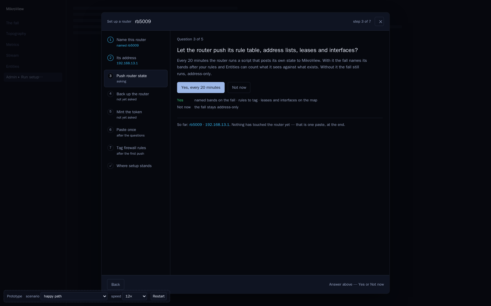
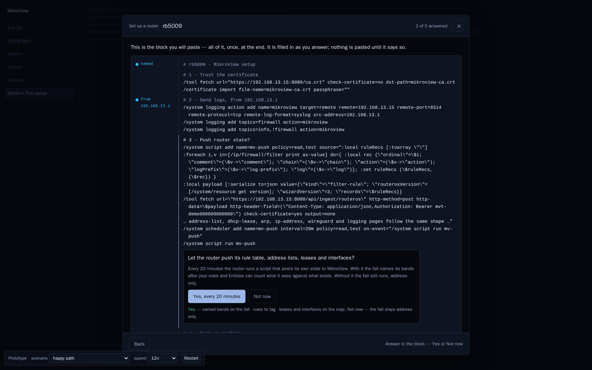
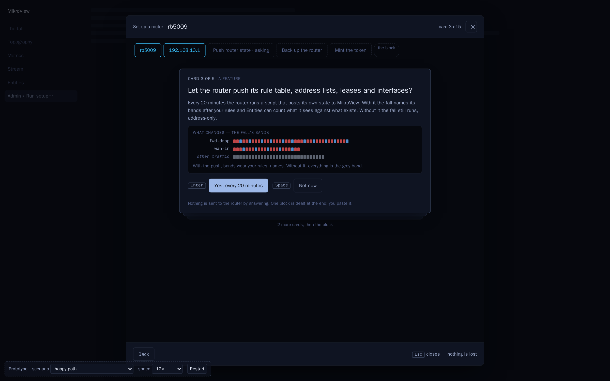

Verdict 2026-09-26 — Z kept as a candidate ("a good implementation of the original wizard style, and I do like it"); AA and AB dropped. All three: "boilerplate theme, green and blue". Full verdict in README.md; round 8 follows.
Three ways to ask the five questions, one block to paste, the router answering one proof at a time. All three live in the ratified modal with the app's own tokens; what differs is how you answer. Answer, Copy, watch. The dashed strip switches scenario and speed.


